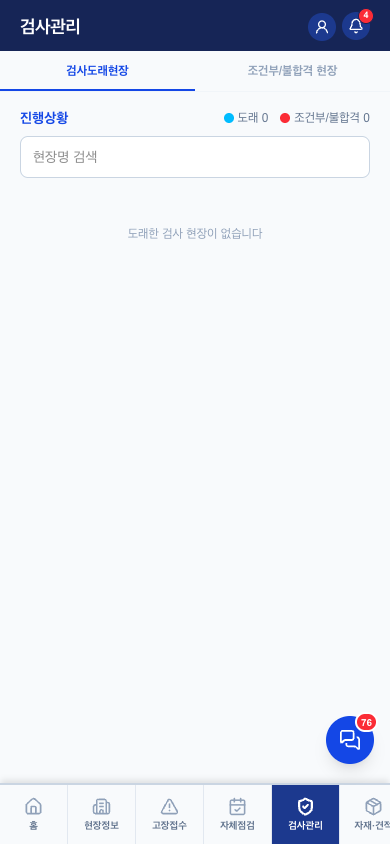
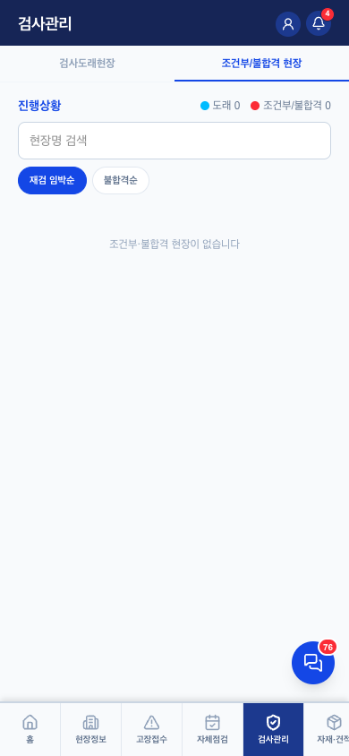

검사관리 v0.1
1. 이 화면의 정체 — 정기검사 대응 상황판
- 승강기는 연 1회 공단 정기검사가 법정 의무 — 이 화면은 "언제 어느 현장 검사가 오나(도래)"와 "떨어진 현장 보완(조건부/불합격)"을 기사에게 보여주는 조회 화면. 등록·수정은 관리자 콘솔 검사관리에서
- 자체점검(매월, 우리가 제출)과 다른 축: 정기검사는 공단이 나와서 하는 검사 — 우리는 일정 대응·보완 조치
- 기사는 담당현장만, 관리자는 전체 (홈과 동일 기준). 계약종료 현장 제외
2. 하위 2탭 + 요약


캡처는 더미 계정(담당현장 0)이라 빈 상태 — 빈 상태 문구도 실물 기준.
| 영역 | 역할·핵심 규칙 |
|---|---|
| 진행상황 요약 | 도래 n · 조건부/불합격 n 카운트 스트립 |
| 검사도래현장 | 관리자가 수기입력한 검사예정일(dueDate) 기준. 검사일 지나면(daysLeft<0) 자동 제외. 실시간 연동(고유번호 등록) 현장은 홈 관제가 담당이라 여기선 제외 |
| 조건부/불합격 | 직전 검사가 조건부합격/불합격인 현장 — 현장명 누르면 당시 부적합내역. 보완기한 61일+ 남으면 숨김(60일부터 노출), 기한 미정은 계속 노출 |
3. 필요 요소 (동작 전제)
inspections— 검사예정일·결과·부적합내역 (관리자 콘솔에서 수기입력이 기준값)- 실시간 연동 현장은 승강기고유번호 + 공공 API (홈 관제와 동일) — 수기값이 기준, API는 참고 (콘솔 안내문에 명시)
4. QA 체크포인트 — 2026-08-04 검증 (QA-RULES 6장)
- ✅ 기사 담당현장만 / 관리자 전체
- ✅ 계약종료 현장 제외 (ssj910 처리 확인)
- ✅ 기한 규칙 — 지난 검사 자동 제외, 보완기한 60일부터 노출, 미정은 계속 노출
6. 화이트라벨 — 구일전용 → 타사 일반화
| # | 지금 | 어떻게 |
|---|---|---|
| 1 | 공공 API 참고 표시 (국가승강기정보센터) | 홈 ③과 같은 tenants.features.live_inspection 플래그 공유 |
| 2 | 보완기한 노출 기준 60일 — 코드 상수 | 운영해보고 회사별 요구 있으면 tenants.settings로 (지금은 공통 상수 유지) |
나머지는 전부 DB 데이터 기반 — 화이트라벨 부담이 가장 작은 화면 중 하나.
변경 이력
| 버전 | 날짜 | 변경 |
|---|---|---|
| v0.1 | 2026-08-04 | 최초 작성 — 2탭 캡처(더미 빈 상태), QA-RULES 6장 반영, 자체점검과의 축 구분(우리가 제출 vs 공단이 검사) 명시 |